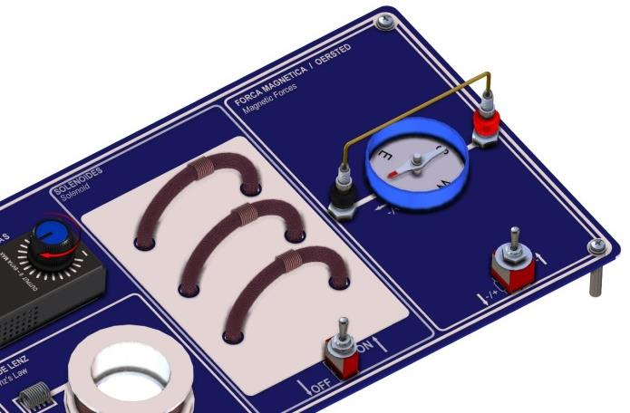

Observe a deflexão de uma bússola, determine o sentido do campo e
confronte a montagem real com o modelo de um fio retilíneo longo.
Física III
qualitativo + extensão quantitativa
corrente contínua de 6 V
Montagem
Primeiro registre o que a regra da mão direita prevê; só então use a
fonte para testar a previsão.
Objetivos de aprendizagem
Verificar que uma corrente elétrica produz campo magnético ao redor do condutor.
Relacionar a inversão da corrente e a troca acima/abaixo do fio à inversão da deflexão.
Usar simetria, lei de Ampère e regra da mão direita para prever direção e sentido.
Conectar a observação à dependência 1/r e, opcionalmente, à lei da tangente.
Material do kit
1 placa para ensaios de experimentos de eletromagnetismo;
1 fonte de alimentação 6 V/1 A;
1 bússola;
1 acessório para a experiência de Oersted.

A bússola fica diretamente junto ao trecho retilíneo do condutor; antes
da energização, fio e agulha devem estar paralelos ao campo terrestre.
Fonte: manual AZEHEB.
Previsão obrigatória antes de ligar
Desenhe o sentido convencional da corrente para cada posição da chave.
Para a bússola abaixo e acima do fio, use a regra da mão direita e
indique para que lado espera que o polo norte desvie. Depois preveja o
que muda quando a corrente é invertida. Não altere a previsão após ver
o resultado: registre o confronto separadamente.
Procedimento
Use o setor “força magnética/Oersted” da placa e afaste ímãs, celulares, ferramentas ferromagnéticas e cabos que possam perturbar a bússola.
Posicione inicialmente a bússola abaixo do fio. Com a fonte desconectada, gire a placa até a agulha se alinhar ao campo magnético terrestre e ficar paralela ao condutor.
Com a chave desligada e o dial em zero, conecte a fonte de 6,0 VCC ao variador da placa. Identifique nas marcações da chave o sentido convencional esperado da corrente.
Registre a previsão. Selecione o sentido do borne vermelho para o preto, ligue apenas durante o intervalo de segurança e aumente lentamente o dial até uma posição intermediária, nunca além da metade. Observe a deflexão e desligue.
Respeite o intervalo de resfriamento. Sem mudar o sentido da corrente, coloque a bússola acima do fio, confira novamente o alinhamento e repita a observação.
Depois de novo resfriamento, volte a bússola para baixo, inverta o sentido da corrente pela chave e repita. Compare o sinal da deflexão com a previsão.
Para completar a matriz de controle, repita também com a bússola acima e a corrente invertida. Em todas as quatro configurações, desligue antes de reposicionar a bússola ou a chave.
Fundamentos
O modelo ideal é um fio retilíneo muito mais longo que a distância à
bússola, com corrente estacionária e espessura desprezível.
1. Do elemento de corrente ao fio completo
A lei de Biot–Savart fornece a contribuição de um elemento do fio. Na
expressão abaixo, r é a separação entre o elemento fonte e o
ponto de observação, e r̂ aponta do elemento para esse ponto.
dB = (μ₀/4π) I(dℓ × r̂)/r²
dB_φ = (μ₀I/4π) a dz/(a² + z²)^(3/2)
Para um fio ao longo de z, a é a distância perpendicular ao fio; componentes não azimutais se cancelam por pares.
B(a) = (μ₀I/4π) ∫[−∞,+∞] a dz/(a² + z²)^(3/2) = μ₀I/(2πa)
A soma sobre todo o fio modifica a dependência radial presente em cada contribuição elementar.
2. Simetria e lei de Ampère
Um fio ideal infinito é invariável por translações ao longo do eixo e
por rotações em torno dele. Portanto, o campo não pode depender da
coordenada longitudinal nem do ângulo azimutal: ele é tangente a
circunferências concêntricas e tem módulo constante em uma
circunferência de raio r. Escolhendo essa circunferência como
caminho amperiano:
∮B·dℓ = μ₀I
B(r)2πr = μ₀I
B(r) = μ₀I/(2πr)
A regra da mão direita fixa o sentido: polegar na corrente
convencional, dedos curvados no sentido de B. Trocar o sinal de I ou
atravessar o plano do fio, passando de abaixo para acima, inverte o
campo transversal percebido pela bússola.
3. Análise dimensional
No SI, [μ₀] = T·m/A. Logo,
[μ₀I/(2πr)] = (T·m/A)·A/m = T. A forma elementar também é
consistente: [μ₀I dℓ/r²] = (T·m/A)·A·m/m² = T.
O resultado dimensional não prova o fator 2π, mas detecta erros de
unidade e mostra que uma potência radial incorreta exigiria outra
escala de comprimento.
4. Superposição e lei da tangente
Com fio e agulha inicialmente paralelos à componente horizontal do
campo terrestre B_T,h, o campo do fio no ponto da bússola é
horizontal e perpendicular a B_T,h. A agulha se orienta pela soma
dos dois campos, formando o ângulo φ com a direção inicial.
tan φ = B_fio/B_T,h
Assim, se B_T,h for conhecido, B_fio = B_T,h tan φ. A relação exige
campos aproximadamente perpendiculares, bússola nivelada e pequena
perturbação magnética local. Para ângulos próximos de 0° ou 90°, a
incerteza relativa tende a se tornar desfavorável.
5. Onde o modelo deixa de ser ideal
O condutor real tem comprimento e espessura finitos, terminais e
trechos de retorno que também produzem campo. A bússola amostra o
campo numa região, não em um ponto; atrito no pivô, inclinação,
desalinhamento e campos de estruturas metálicas ou da própria fonte
também deslocam o ângulo. A aproximação de fio longo é melhor quando a
distância ao trecho central é pequena comparada ao comprimento desse
trecho, mas ainda grande frente ao raio do condutor.
Dados
A atividade básica é qualitativa. Preencha somente valores realmente
observados ou medidos; deixe em branco o que não foi instrumentado.
Registro das configurações e das medições — não preencher com valores simulados
Sentido da corrente
Posição acima/abaixo
r (m)
I (A)
Ângulo φ (°)
B_fio (T)
Observações
Tratamento dos dados
Adote sinais para I e φ e declare a convenção no diagrama.
Confira se inverter I, mantendo a posição, inverte o sinal de φ.
Confira se trocar acima por abaixo, mantendo I, também inverte o sinal.
Se B_T,h for conhecido, calcule B_fio pela lei da tangente e compare com μ₀I/(2πr).
Com vários valores de r, teste a proporcionalidade 1/r por um gráfico de B_fio versus 1/r; não conclua sobre a lei radial a partir de um único ponto.
Controles e desvios
Registre o ângulo com a corrente desligada antes e depois da série.
Um zero que deriva sugere campo local variável ou deslocamento da
montagem. O desalinhamento inicial faz B_fio deixar de ser exatamente
perpendicular a B_T,h, invalidando a forma simples da lei da
tangente. Afaste materiais magnéticos e mantenha fonte e cabos na
mesma posição em todas as leituras.
Propagação opcional para o modelo de Ampère
σ_B/B = √[(σ_I/I)² + (σ_r/r)²]
Esta forma supõe incertezas pequenas e independentes em I e r. Ela não
inclui sistemáticos como comprimento finito, posição efetiva do centro
da bússola, campo dos terminais, desalinhamento ou campo magnético local;
discuta esses efeitos separadamente. Se B for obtido pela lei da
tangente, inclua também as incertezas de φ e de B_T,h.
Relatório
Organize evidência, modelo e limites da conclusão. O arquivo
relatorio.md oferece a mesma estrutura em formato editável.
Ao imprimir, somente esta aba será incluída.
Curso/turma:
Data:
Grupo:
Integrantes:
Objetivo e previsão
Declare o objetivo com suas palavras. Anexe a previsão feita antes
da energização e diferencie-a do que foi observado.
Diagrama e sentidos
Desenhe fio, corrente convencional, bússola acima/abaixo, norte
terrestre, campo do fio e sinal adotado para φ. Aplique a regra da
mão direita às quatro configurações.
Dados e evidências
Transcreva a tabela sem completar lacunas com estimativas. Inclua
uma fotografia da montagem, se autorizada, e descreva o estado da
corrente em cada registro.
Análise
Confronte sinais previstos e observados. Demonstre
B(r) = μ₀I/(2πr), explique a lei da tangente e, se houver medidas
em diferentes distâncias, compare os dados com 1/r.
Incerteza e limitações
Apresente resoluções instrumentais e propagação quando aplicável.
Discuta desalinhamento, campo local, fio finito, terminais, atrito
da bússola e aquecimento sem confundir dispersão com viés.
Conclusão
Responda apenas ao que os dados sustentam: existência, sentido e,
se houve extensão quantitativa suficiente, dependência radial do
campo. Não transforme uma observação qualitativa em confirmação
numérica.
Tabela de dados do relatório
Sentido de I
Acima/abaixo
r (m)
I (A)
φ (°)
B_fio (T)
Observações
Perguntas conceituais
Por que a troca de abaixo para acima inverte o campo do fio no ponto da bússola?
Por que inverter a corrente produz efeito equivalente sobre o sentido da deflexão?
Que simetrias justificam escolher uma circunferência como caminho amperiano?
Por que o fator 1/r² de Biot–Savart não é a dependência final do campo de um fio longo?
Em quais condições tan φ = B_fio/B_T,h deixa de ser uma boa aproximação?
Quais dados seriam necessários para distinguir experimentalmente 1/r de 1/r²?
Checklist de entrega
□ identificação e objetivo;
□ previsão original e diagrama com sentidos;
□ fotografia ou desenho fiel da montagem;
□ tabela com unidades e dados realmente obtidos;
□ derivação, cálculos e gráfico B_fio versus 1/r, quando houver dados quantitativos;
□ análise de incerteza e limitações;
□ respostas conceituais e conclusão compatível com as evidências.